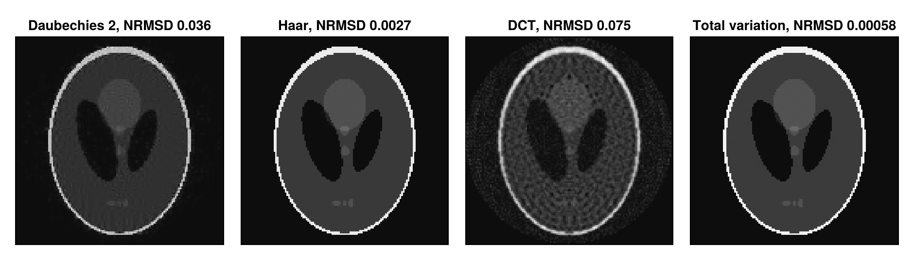

Use a Custom Sparsifying Transform
The iterative reconstructions can apply the regularization params[:reg] to a transform of the image instead of the image itself, as described in Reconstruction as an Inverse Problem. params[:sparseTrafo] sets this transform: the name "Wavelet", an operator of LinearOperatorCollection.jl or an operator of your own, which LinearOperators.jl helps to build. using MRIReco loads both packages. The example reconstructs a phantom from 48 simulated radial profiles, too few for a good reconstruction without regularization, with ADMM and an $\ell_1$ regularization of the transformed image:
using MRIReco, MRISimulation, Wavelets, FFTW, CairoMakie
using ImageUtils: shepp_logan
N = 128
image = shepp_logan(N)
simParams = Dict{Symbol, Any}()
simParams[:trajName] = "Radial"
simParams[:numProfiles] = 48
simParams[:numSamplingPerProfile] = 2N
acqData = simulation(image, simParams)
params = Dict{Symbol, Any}()
params[:reco] = "standard"
params[:reconSize] = (N, N)
params[:solver] = ADMM
params[:vary_rho] = :balance
params[:iterations] = 50
params[:normalizeReg] = MeasurementBasedNormalization()
params[:reg] = L1Regularization(0.01)
params[:sparseTrafo] = "Wavelet"
imageWavelet = reconstruction(acqData, params)An Operator of LinearOperatorCollection.jl
The operators of LinearOperatorCollection.jl take the complex element type of the data, ComplexF64 here, and the image size. "Wavelet" is WaveletOp with its default wavelet, Daubechies 2 of Wavelets.jl. The Haar wavelet suits the piecewise constant phantom better:
params[:sparseTrafo] = WaveletOp(ComplexF64; shape = (N, N), wt = wavelet(WT.haar))
imageHaar = reconstruction(acqData, params)An Operator of Your Own
The operator takes the image as a vector of length prod(params[:reconSize]). LinearOperator(T, nrows, ncols, symmetric, hermitian, prod!, tprod!, ctprod!) builds one from functions that compute the product and the product with the adjoint in place. As an example, the 2D discrete cosine transform of FFTW.jl gives the same result as DCTOp of LinearOperatorCollection.jl:
function dctOperator(N)
prod!(res, x) = (res .= vec(dct(reshape(x, N, N))))
ctprod!(res, y) = (res .= vec(idct(reshape(y, N, N))))
return LinearOperator(ComplexF64, N * N, N * N, false, false, prod!, nothing, ctprod!)
end
params[:sparseTrafo] = dctOperator(N)
imageDCT = reconstruction(acqData, params)
params[:sparseTrafo] = DCTOp(ComplexF64; shape = (N, N))
reconstruction(acqData, params) ≈ imageDCTtrueTransforms That Are Not Orthonormal
MRIReco.jl combines the regularization term with the transform in a TransformedRegularization of RegularizedLeastSquares.jl. Its proximal map applies the one of the term to the coefficients and transforms the result back with the adjoint. This is correct for orthonormal transforms, whose adjoint is their inverse, such as the wavelets and the DCT above, but not for others. With the finite differences of GradientOp as params[:sparseTrafo], the reconstruction above deviates more from the phantom than without regularization, and with FISTA, or with ADMM without vary_rho = :balance, it diverges. Total variation, which penalizes these differences, is available as the regularization term TVRegularization and needs no transform. As in Iterative Reconstruction, it gets more inner iterations than by default:
delete!(params, :sparseTrafo)
params[:reg] = TVRegularization(0.01, shape = (N, N), iterationsTV = 50)
imageTV = reconstruction(acqData, params)The figure compares the four regularizations by the normalized root mean squared deviation from the phantom. Since the phantom is piecewise constant, the Haar wavelet and the finite differences of total variation represent it with few coefficients, and the cosines of the DCT with many, so that the DCT does not improve this reconstruction:
deviation(x) = round(nrmsd(image, abs.(x[:, :, 1, 1, 1, 1])), sigdigits = 2)
images = [imageWavelet => "Daubechies 2", imageHaar => "Haar", imageDCT => "DCT",
imageTV => "Total variation"]
fig = Figure(size = (940, 270))
for (i, (x, title)) in enumerate(images)
ax = Axis(fig[1, i], title = "$title, NRMSD $(deviation(x))", aspect = DataAspect(), yreversed = true)
heatmap!(ax, abs.(x[:, :, 1, 1, 1, 1])', colormap = :grays)
hidedecorations!(ax)
end
fig
This page was generated using Literate.jl.